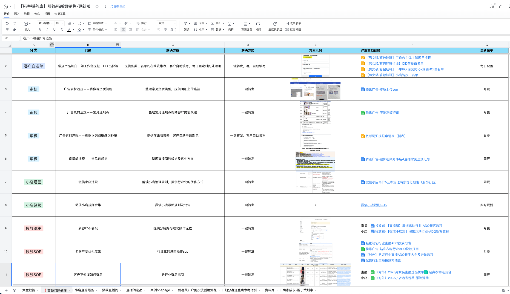
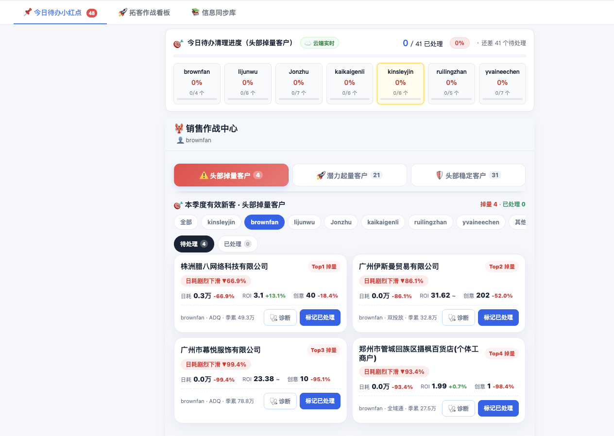
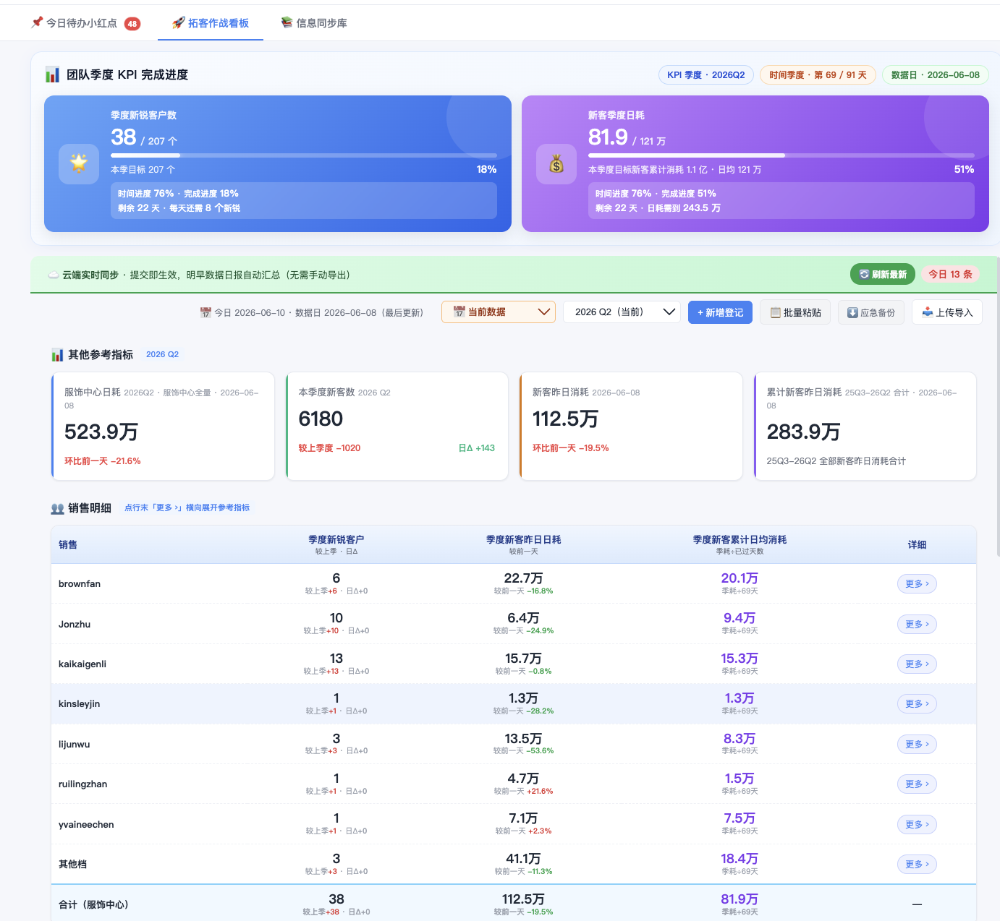
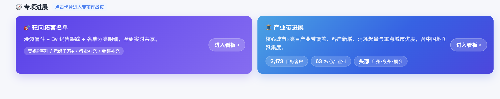
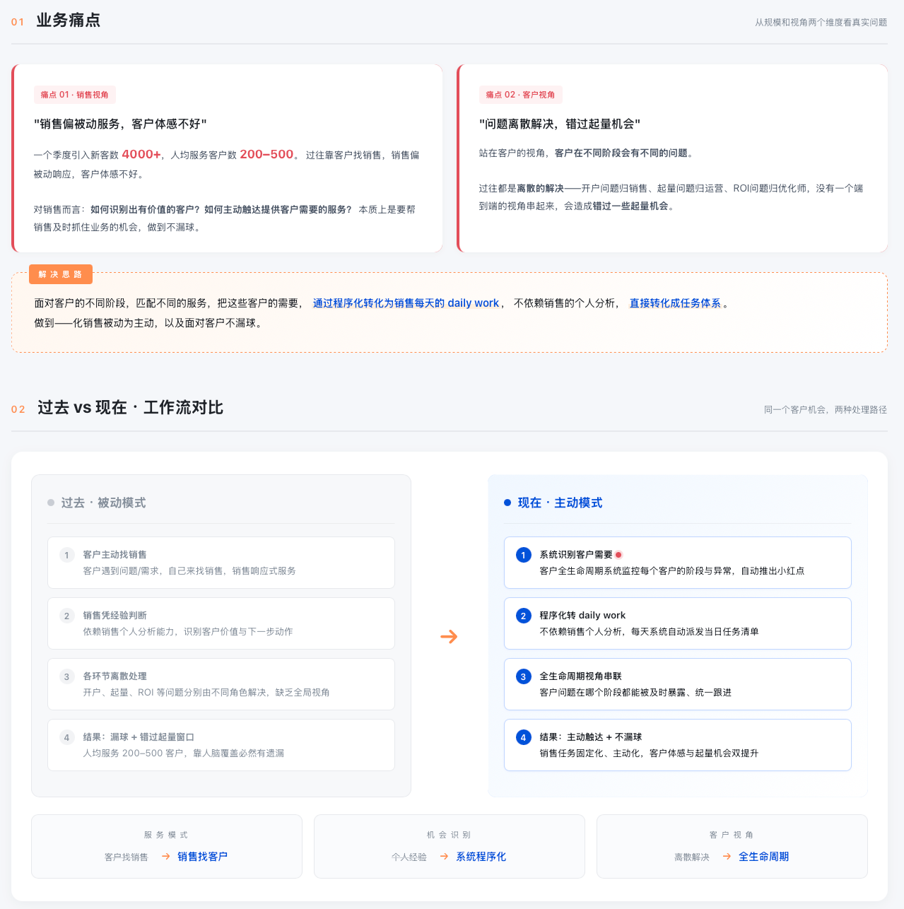
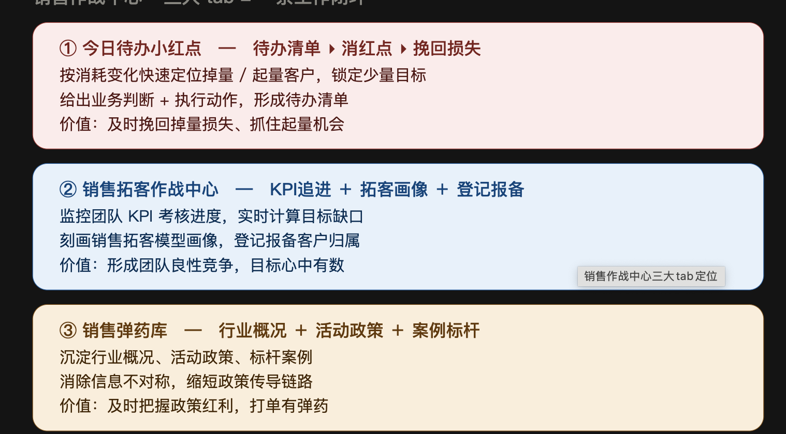

PART 01 · 痛点
业务困局
大量增长的中长尾商家 vs 销售碎片化的时间，整体服务以被动为主，容易漏球，错失增长机会
⏱️ 容易漏球 → 中间客户没人接
• 精力有限：销售只能盯重大问题或被动响应客户咨询
• 中间客户被忽略：处于成长阶段的客户没人主动介入
• 结果：消耗殆尽或悄悄流失，等发现已经晚了
• 中间客户被忽略：处于成长阶段的客户没人主动介入
• 结果：消耗殆尽或悄悄流失，等发现已经晚了
📋 任务零散 → 移动场景下没抓手
• 外勤场景多：销售常在路上，碎片时间多、整块时间少
• 任务零散：每天该催谁、该盯谁，全凭脑子记
• 缺系统驱动：没工具把零散任务具象化为每日必做动作
• 任务零散：每天该催谁、该盯谁，全凭脑子记
• 缺系统驱动：没工具把零散任务具象化为每日必做动作
📚 信息过载 → 信息散、追不上
• 信息过载：行业动态、政策活动更新很快，难全面跟进
• 专业度不够：客户问到行业问题、新品玩法常常答不上
• 缺随身字典：客户不同阶段需要不同服务，没工具支持
• 专业度不够：客户问到行业问题、新品玩法常常答不上
• 缺随身字典：客户不同阶段需要不同服务，没工具支持
⬇
因此 · 需要小红点任务系统
核心转变 ① · 服务模式
被动服务➜主动服务
核心转变 ② · 销售工作方式
低效伏案➜工具化，随手处理
核心转变 ③ · 资源应用
资源分散➜资源集中，服务高效
从"手搓 Excel + 微信群推送" 走到 "用 AI 做产品"
没有 AI 之前，我们也试过自己想办法——手搓 Excel 弹药库、往群里发"涨跌红黑榜"，但都停在静态文档 + 一次性推送，看到了不一定动。有了 AI 之后，业务同事可以直接当产品经理——把业务规则翻译成能触发、能闭环、能沉淀的产品工具，这就是小红点系统。


PART 02 · 能力总览
小红点系统长什么样子 🚀 打开小红点系统
四个一级 Tab，覆盖"看进度 / 做动作 / 管生命周期 / 给弹药"四件事：
📌 今日待办小红点
今日概况预览
待办清单 → 消红点
客户明细 + 涨跌诊断
🚀 销售拓客作战中心
KPI 进度 / 销售明细
销售拓客模型画像
专项进展：靶向拓客 / 产业带
🔄 客户生命周期管理
拓客登记入口
生命周期系统
全量登记明细 + 阶段跟进
📚 销售弹药库
行业概况
活动政策
案例标杆 / 产品能力

四大业务场景，对应看板四个模块
每个模块对应具体业务场景，以及销售实操路径。
+场景一 · 销售任务系统，处理每日任务 → 📌 小红点·今日待办点击展开
| 子模块 | 能力 / 内容 | 状态 |
|---|---|---|
| 今日概况预览 | 在今日待办上方先给整体概况：任务总量、已处理进度、重点预警和今日需要优先看的客户 | ✅ 已上线 |
| 今日待办清理进度 | 头部掉量客户拢成一条可清零待办，已处理/总数，云端实时 | ✅ 已上线 |
| 关键客户作战台 | 生命周期视角（新手/培育/成熟期）+ 考核追赶视角（潜在新锐/重点客户监控） | 🚧 上线中 |
| 待办小红点任务明细 | 多维筛选（分组/类目/战役）+ 一键诊断 + 标记已处理闭环留痕 | ✅ 已上线 |
小红点的运行逻辑 · 一图看懂
STEP 01
精准识别
➜
STEP 02
及时介入
➜
STEP 03
监控回收
如何识别客户？
客户分档 · 触发任务
- 按投放表现分四档：头部稳定 / 头部掉量 / 潜力起量 / 海量长尾
- 掉量预警：消耗或 ROI 较前日下降超过 20%，系统即时标红
- 起量抢窗口：消耗突然放大即提醒，机会窗就两三天
销售怎么处理？
看板定位 · AI 诊断 · 资源匹配
- 看板一键定位：异动客户气泡标红，待办清单自动生成
- 联动小 A 出诊断：3-5 分钟出报告，不用销售自己看报表猜
如何监控？
数据留痕 · 模型沉淀
- 清除即留痕：处理完打状态标签（已处理 / 无效 / 需升级），实时回传云端
- 权限隔离合规：销售看自己、Leader 看组员、管理层看团队
- 反馈存档：每次反馈实时回写拓客模型，精准度持续提升
销售实操 · 之前 vs 现在
之前 · 被动
每天翻 7 份报表自己找
- 没有今日概况，先翻明细才知道今天哪里异常
- 掉量靠脑子记，重点之外照顾不到
- 等客户主动找，掉量已经几天
➜
现在 · 主动 + 不漏球
先看今日概况，再处理待办清单
- 上方今日概况预览先判断今日压力
- 系统自动顶出掉量客户，红点提醒
- 点 🩺 一键诊断查因，处理一个消一个红点
实操之变：从"每天翻报表自己找、靠脑子记" → "先看今日概况、再清待办红点"，掉量在客户开口前就被拦回。


+场景二 · 新客引入及客户管理 → 🚀 销售拓客作战中心点击展开
| 子模块 | 能力 / 内容 | 状态 |
|---|---|---|
| KPI 进度情况 | KPI 进度盘 + 7 销售明细横向对比，按季度目标看缺口和追赶节奏 | ✅ 已上线 |
| 销售拓客模型 | 类目 / 客户来源 / 投放端 / 链路画像（按数量或消耗占比），用于复盘销售拓客结构 | ✅ 已上线 |
| 专项进展 | 新增专项入口：靶向拓客名单（渗透漏斗 + By 销售跟踪 + 名单分类明细）/ 产业带进展（核心城市×类目产业带覆盖、客户新增、消耗起量） | ✅ 已上线 |
| 客户标签管理 | 客户消耗波动 / 投放效果 / ADQ / 全域通 / 引入资源来源等 | ⏳ 待建设 |


销售实操 · 之前 vs 现在
之前 · 各算各的
进度、画像、专项分散看
- KPI 进度靠人工汇总，隔天才知道
- 拓客画像、专项名单、产业带进度散在不同材料
- 销售之间数据不透明，对数据先吵半天
➜
现在 · 经营进度一屏看
KPI + 画像 + 专项进展并在作战中心
- KPI 进度按 91 天倒计时实时算缺口
- 销售拓客模型直接看结构，知道新客从哪里来
- 专项进展卡片直达靶向拓客名单和产业带看板
实操之变：从"隔天汇总、专项散落" → "KPI、拓客模型、专项进展集中在作战中心"，管理层和销售都能一眼看到进度、结构和专项突破口。
+场景三 · 管好客户生命周期 → 🔄 客户生命周期管理点击展开
| 子模块 | 能力 / 内容 | 状态 |
|---|---|---|
| 拓客登记入口 | 登记入口已搬到生命周期模块内，支持单客登记、批量粘贴、简称识别、归属留痕 | ✅ 已上线 |
| 客户阶段识别 | 按投放天数、消耗表现、起量稳定性识别新手期 / 生长期 / 成熟期 | 🚧 上线中 |
| 分层服务策略 | 不同阶段匹配不同服务动作：新手建基建、生长期促起量、成熟期防掉量 | 🚧 上线中 |
| 拓客全量登记明细 | 登记数据和生命周期客户运营放在同一动线，避免“登记在一处、跟进在另一处” | ✅ 已上线 |

销售实操 · 之前 vs 现在
之前 · 只看单日异动
客户服务靠经验判断阶段
- 登记入口和后续客户运营分开，录入完不等于管起来
- 新手客户不知道先补哪块基建
- 成长客户起量窗口容易错过
➜
现在 · 按阶段运营
登记入口 + 生命周期运营放在一起
- 新增客户先在生命周期模块内完成登记和归属留痕
- 新手期：看建站、素材、链路是否完整
- 生长期/成熟期：看加预算、扩计划、稳定性和掉量风险
实操之变：从"登记和运营分散" → "登记入口、客户阶段、后续跟进都放进生命周期"，让新增客户从录入开始就进入持续运营。
+场景四 · 补充行业知识，建立专业度 → 📚 销售弹药库点击展开
| 子模块 | 能力 / 内容 | 状态 |
|---|---|---|
| 新客政策 | 平台政策 & 营销活动实时同步，缩略图 + 上下线管理 | 🆕 本期新增 |
| 行业信息 | 服饰大盘 + 10 个二级行业指标 + Top3 客户参考 | 🆕 本期新增 |
| 活动信息 / 标杆案例 | 优秀新客案例 & 起量打法，按类目 / 链路检索 | 🆕 本期新增 |
| 产品能力 | ADQ 服饰投放产品矩阵介绍 & 对外文档 | ⏳ 待建设 |


销售实操 · 之前 vs 现在
之前 · 现查现猜
客户问行情/政策答不上
- 大盘、竞品要临时到处找数
- 政策一变，传达滞后、说不准
- 新销售没积累，开口没底气
➜
现在 · 随手有弹药
脱敏重组好的统一弹药库
- 行业概况：大盘 + 二级行业 + Top3 参考
- 政策海报实时同步，当天就能讲
- 标杆案例点开带「适用客户名单」
实操之变：从"客户一问就现查现猜" → "随手调出权威数据/政策/案例截图给客户"，专业度不再靠个人经验。
四个场景从"先看今日概况、再处理任务"（今日待办小红点）到"KPI、拓客模型、专项进展集中管理"（销售拓客作战中心），再到"登记入口 + 客户生命周期运营"（客户生命周期管理），最后到"建立专业度对外赋能"（销售弹药库），覆盖销售一天的完整动线。
PART 03 · 真实成效
一个"预警 → 诊断 → 加投"的完整闭环案例
这个案例最能说明看板的价值：它不只是发现问题，还顺手把"找原因"这一步接到了 AI 上。
✅ 太力 · 掉量被及时拦回
- 1太力 5.28-6.2 消耗下滑 → 今日待办「头部掉量客户」+ 作战台第一时间顶出
- 2点客户卡 🩺 诊断 → 预填"全面诊断该客户投放" → 跳转 adataclaw（小 A）
- 3小 A 多维归因（消耗 / 基建 / 投放策略 / 素材质量）→ 销售据此加投补量
- 4消耗很快回到正常水位，一次潜在流失被拦回
+📈 太力消耗趋势 & 小 A 诊断结论（节选）点击展开
📈 太力消耗趋势
🩺 小A 诊断维度：消耗 · 基建 · 投放策略 · 素材质量
 ⚠ 5.28-6.2 掉量
✓ 加投后回升
⚠ 5.28-6.2 掉量
✓ 加投后回升
5.28-6.2 明显掉量 → 经小 A 诊断、销售卷客户优化后，6.3-6.4 快速回升到正常水位。
小 A 给出的诊断结论（节选）
🔴 太力客户全面诊断报告 数据周期 2026.05.28~06.02 vs 对比期 05.22~05.27
📊 整体概览
诊断期总消耗 5.62 万元，环比 ↓32.7%（-2.73 万）。效果指标全面恶化：CTR ↓13.8%、CVR ↓25.9%，模型预估偏差急剧扩大是关键风险信号。
🏗️ 基建
账户集中度恶化（CR3 74.7%→84.7%），账户 78104759 掉量 -1.9 万（↓54%），贡献总缩量 70%，是最大根因；素材 96.5% 依赖视频，结构单一、同质化上升。
🎯 投放策略
非 ROI 广告消耗 ↓57.3%，贡献总缩量 95.6%（主因）；全域通直播断崖 ↓69.2%；视频号 CPM 暴跌 ↓31.5% 但获量反降，自身问题更大。
📉 投放效果
pCVR Bias 7.2%→20.8%（↑189%）、pCTR Bias ↑80%，模型严重高估价值 → 高成本出价 → 系统压量；精排通过率 ↓13.4%，获量持续下滑。
🚨 综合判断：本轮是效果恶化驱动的系统性缩量，非 ROI 广告为主因、账户 78104759 为直接触发点，深层根因是 pCVR/pCTR 模型预估偏乐观。建议：优先联动产研校准预估模型，同步引导客户补充差异化素材、降低账户集中度。
这份报告是销售用小 A 实际跑出来的——看板负责"发现"，小 A 负责"归因到账户/素材/模型颗粒度"，销售负责"加投决策"。三步串成闭环，把一次潜在流失挡了回去。
TAKEAWAY
看板的价值不止"发现问题"——它把发现、归因、动作串成一条闭环，让掉量在扩大前就被处理掉。